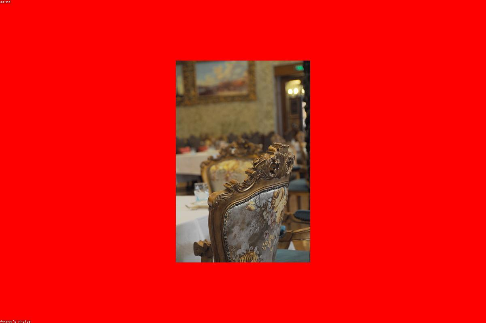
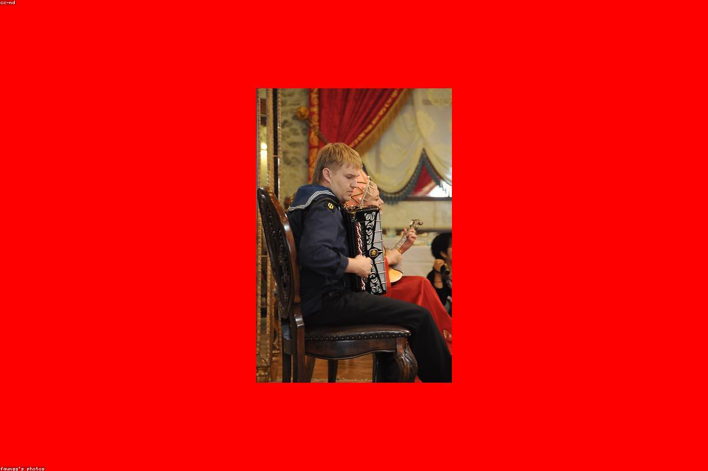

Нижний Новгород · у Зачатьевской башни Кремля
Особняк 1917 года: глубокий красный, тёплый камень и латунь. Авторские блюда из локальных продуктов под мерцание свечей и панораму волжских стен.
О месте
Red Wall занимает доходный особняк 1917 года у самой Зачатьевской башни — там, где кирпичные стены Нижегородского Кремля спускаются к Волге. Мы сохранили высокие потолки, лепнину и латунные детали, добавив глубокий красный бархат и тёплый свет свечей.
Наша кухня — современное прочтение русской традиции. Локальная рыба из Волги, дичь, соленья из собственного погреба и десерты по рецептам столетней давности. Каждое блюдо — диалог между историей особняка и сегодняшним вкусом.


Отзывы гостей
«Пришли на ужин к закату — из окна видна подсвеченная стена Кремля, на столе уха на трёх рыбах. Атмосфера старого особняка и при этом всё современно. Лучший вечер за год».
«Томлёные щёки телёнка тают во рту, а настойка на клюкве — отдельная любовь. Красный бархат, латунь, свечи. Возвращаемся уже третий раз и водим друзей».
«Отмечали годовщину в приватном кабинете. Внимательный сервис, живая гармонь, кулебяка как у бабушки, только тоньше и изящнее. Спасибо за вечер, который запомнится».
Как добраться
Нижний Новгород, у Зачатьевской башни Кремля, рядом с набережной Волги.
Адрес
Нижний Новгород,
у Зачатьевской башни Кремля
Набережная Волги · вход со стороны особняка
Часы работы
Пн–Чт 12:00 – 00:00
Пт–Сб 12:00 – 02:00
Вс 12:00 – 23:00
Мы перезвоним в течение 15 минут и подберём лучший стол к вашему вечеру.
Позвонить и забронировать